EmEditor 24.x - 25.x New Validation System Analysis
Introduction
EmEditor has not changed its registration code format since version 14, although the newer versions include online validation of the registration keys. For newer versions, it prompts you to register online every time you open the program if you register by registration keys without signing in, although this notification can be turned off. If you are not using authentic purchased registration keys, the program may prompt you that the entered registration key is not found on the server.
For recent versions, the program performs stricter checks on registration code formats and embeds blacklists of certain patterns.
If your registration keys cannot pass the additional checks or matches one of the blacklisted patterns, the program will prompt that You might be a victim of software piracy and enter an infinite loop of restarting the program and opening a web page on the EmEditor website regarding this topic.
Even with these efforts, illegitimate registration keys can still be generated and used to register offline successfully, given that they pass all checks by the program. In addition, genuine registration keys purchased from official sources can be used on much more devices than allowed. These might be the primary reasons that EmEditor is introducing the new validation system.
Although the legacy registration keys in the version 14 format can still be used in version 25 (as of now), it is very possible that they will not be supported anytime in the future, because the new validation system can accept offline licenses as well, which completely eliminates the only useful feature of legacy registration keys being used in segregated or air-gapped networks.
From version 24.5.3, EmEditor transitioned to Stripe as their primary payment processor. It results in the program accepting two new formats of licenses: Stripe registration key and Stripe subscription. It adds more complexity to the whole licensing system.
I did some software reverse engineering to analyze the new validation system, and I succeeded in registering the software by multiple new validation methods, including local device tokens (with or without legacy registration keys or Stripe registration keys) and offline licenses. I will post some of the findings here. I will not include the technical details or instructions to bypass the validation systems.
Registration keys
Before going to the core components of the new validation system, local device tokens and offline licenses, I analyzed the formats of supported registration keys (since they can be used in combination of local device tokens).
For legacy registration keys, version 14 keys start with the letter D.
You probably can find a lot of them on the Internet, mostly illegitimate ones.
They can be directly entered into the program to register it.
Surprisingly, I found another format of legacy registration keys (at least working for versions 24 and 25).
They start with the letter M.
Although they cannot be entered directly in the program to register it, they can be encoded and stored in some ini file (for portable versions) or somewhere in the registry (for installer versions) to register the program successfully.
They have the same encoded information as standard version 14 keys staring with D, including the expiration dates.
They even have the same format checks and blacklisted patterns.
I am not sure whether the keys starting with M have any relation with the Store Apps version of EmEditor, because I do not have an environment to test Store Apps.
For Stripe registration keys, they start with r-.
I tested that the program would accept any string with the correct length, even if the official blog claimed that the correct format should be r-xxxx-xxxx-xxxx-xxxx-xxxx where x is a base58 character.
I also confirmed that you can omit the r- prefix and the -'s in the keys.
To my surprise, the program accepts any string starting with r- too, even if their length is shorter than that of the expected format.
However, the program will store these keys in their incorrect format as is, instead of automatically adjusting to the correct format if you omit the r- prefix or the -'s from a correctly formatted string.
It indicates that the program can inherently check whether the entered keys have the correct format, but it somehow accepts those with incorrect formats.
Maybe EmEditor will add additional checks in later versions.
But for now, if you are using EmEditor completely without network, you can successfully register it using arbitrary strings with r- prefix.
(I did not check whether there are length limits.)
For Stripe registration keys, the program will never prompt you to register online or log in even if you have not done so, even with the incorrectly formatted ones. It seems kind of crazy to me that the new versions accept literally arbitrary registration keys, unlike the older versions that at least enforce some non-trivial formats. Maybe they plan to enforce the new validation system soon, so they are not spending any efforts on stuffs related to registration keys.
I found a blacklisted Stripe registration key too, but unlike blacklists for legacy registration key, the program would only prompt invalid key once at entering the key.
It would not automatically restart, open web pages, or prompt You might be a victim of software piracy messages.
The program seemed fully functional as well.
About dialog vs. Registration Information dialog
In recent versions, in addition to the About dialog, there is a Registration Information dialog to display registration information. The difference is that the Registration Information dialog only displays information about the new validation system. It does not contain any information about registration keys like in the About dialog.
Unregistered
The About dialog and the Registration Information dialog look like below when unregistered. The program is fully functional in the 30-day trial period. After 30 days, you either need to register or downgrade to the free version.
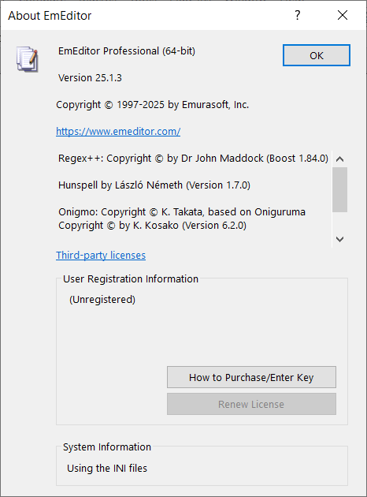
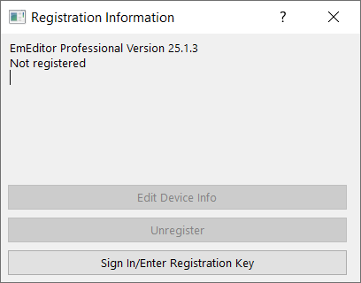
Registered by legacy registration keys
The About dialog shows the user name and expiration date (or Lifetime License) corresponding to the registration key, followed by Not registered indicating that it have not passed the new validation systems.
The Registration Information dialog shows Not registered only.
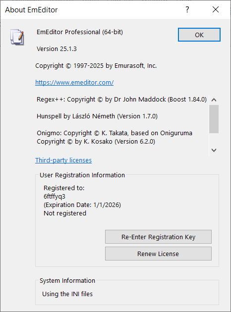
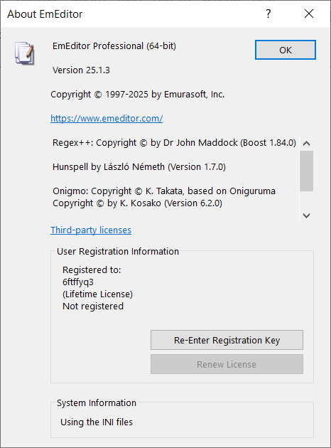
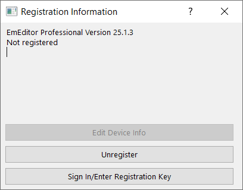
Registered by Stripe registration keys
The only difference of Stripe registration keys from legacy ones is in the About dialog, where there is not an expiration date or Lifetime License.
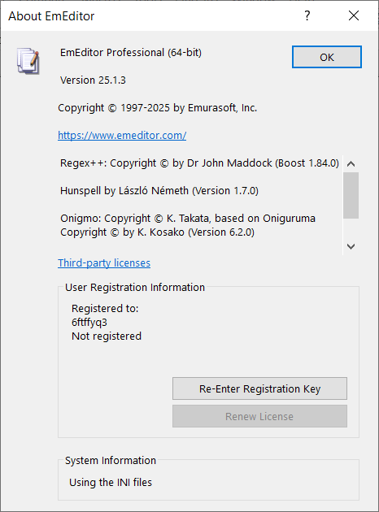
Offline license
Offline licenses can indeed register the software without connecting to the Internet, but the program attempts to check the license by sending requests to the server every time you start the program. Thus, you still need to block the Internet for the program to prevent your offline licenses from being deleted by online checks.
The program will delete legacy registration keys and local device tokens if you use offline licenses, so they cannot coexist. As a result, it is less complex than local device tokens that stores information of online registration, but it still has two variants.
Offline license without Stripe subscription
The information displayed is exactly the same in the About and the Registration Information dialogs.
The Registration Information dialog will show Validation successful if the offline license is validated.
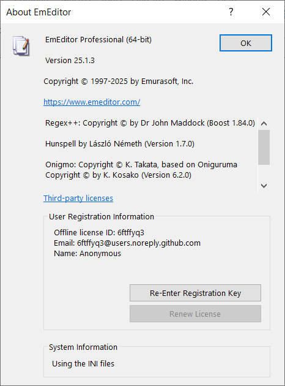
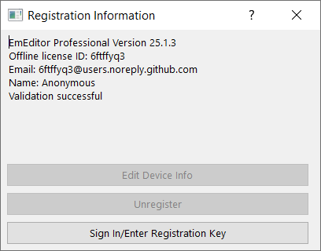
Offline license with Stripe subscription
The About and the Registration Information dialogs both have an additional line of the Stripe subscription ID.
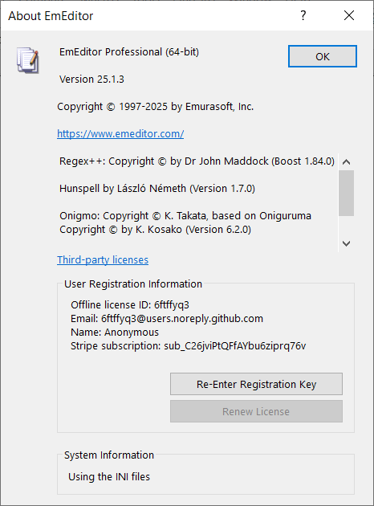
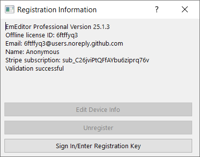
Local device token
Local device tokens are saved after completing online registration of the current device. It can be used in combination with legacy registration keys, Stripe registration keys, and Stripe subscriptions. Of course, it cannot coexist with offline licenses.
Local device token without login, registration keys, or Stripe subscription
Normally, local device tokens will need one kind of registration keys or Stripe subscriptions. However, I found that the program could be fully unlocked without any of these or even the login information. Below shows how the registration information is displayed in this weird situation.
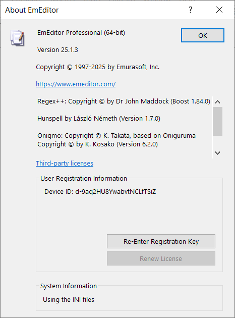
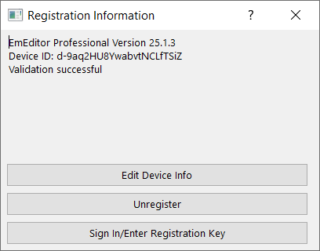
Local device token with login only
I am not sure whether this is actually valid, but local device token could work with login information only and without any registration keys or Stripe subscriptions.
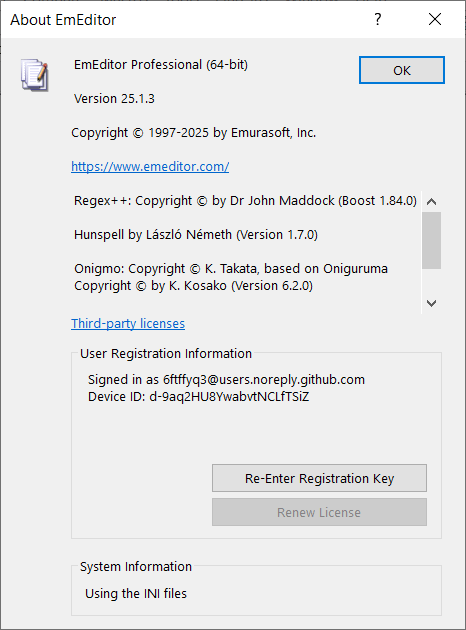
Local device token with registration keys only
I am also not sure whether validations with registration keys always require logging in. The program accepted it anyway. It makes sense that the device is registered by the registration keys only, not mandating logging in.
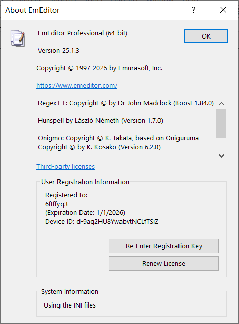
Local device token with login and registration keys
It should be guaranteed a valid combination for genuine licenses and validation processes.
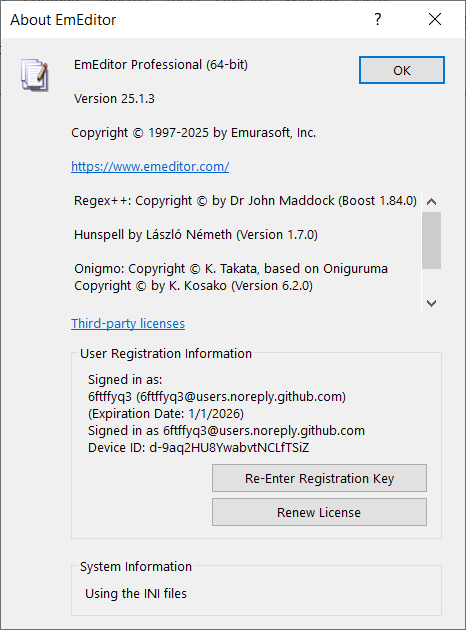
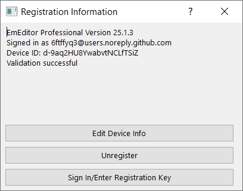
Local device token with login and Stripe subscriptions
Using Stripe subscriptions always require login, since there are no place to enter subscription info manually in the program.
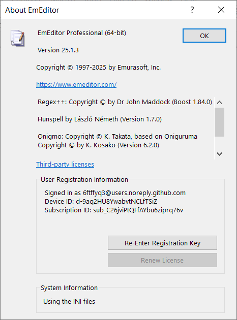
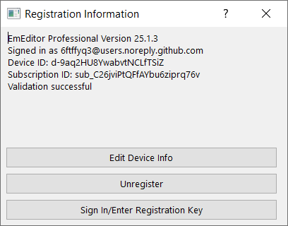
Other findings
- EmEditor will crash sometimes you open the Registration Information dialog with local device tokens and legacy registration keys without Internet connections. For some versions, it will crash only on 32-bit programs but not on 64-bit ones. It is likely a bug. I did not encounter crashes unless opening the Registration Information dialog, so it can be rare for regular users with genuine licenses.
- EmEditor will report file corruption and potential virus when you modify the main executable. You can still launch and use the program normally in this case. However, you can bypass it in multiple ways, such as signing the modified binary and trust the certificate locally, or add some keys to configurations to make the program skip integrity checks. The configuration key exists probably for testing purposes in isolated environment or accelerating automated tests, since verifying digital signatures can take much time (compared to the launching time). I managed to reduce the launching time by more than 50% by setting this configuration key.
- Local device tokens are tied to machine IDs. If you copy the token to another device, it will not work unless the program is on some removable media (you can store it on USB flash drives or use tools to create virtual drives marked as removable). There is a magic device ID that can make the program skip checking machine IDs regardless of program installation locations, probably for testing purposes.
- In my tests on Windows 10 64-bit, the 64-bit programs could get the machine IDs, but the 32-bit programs could not and fell back to a default machine ID.
The licensing systems of EmEditors seem to be increasingly complex, but the various findings from reverse engineering is entertaining.